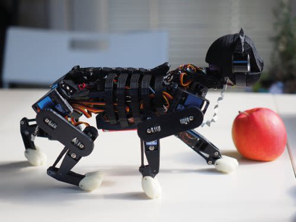
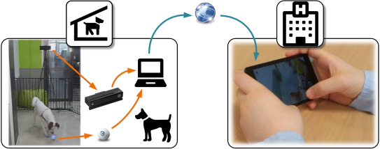

Introduction
Following up our lecture we get topic related assignments. This page will cover the 4 topics that go along with corresponding workshop assignments. You can find these work outs under "Workshops" in the navigationbar. Underneath this text you can find the anchors to the topics :)
AR/VR Wearables Artifical Creatures Playful Interactions
AR/VR
Create conceps with AR or VR on 3 of our given topics
AR Healthcare
CPR Training through AR. Specially during these times of a pandemic is nearly impossible to safely practice it. Overall these courses are given in group form and even share the same dummy to learn the practice of CPR. By getting a rent package of CPR course you can safely are distance practice on a rental dummy or a relative to stay safe but still be able to learn and practice CPR. Simply put on goggles and see interactive what motions you have to make and where. A teacher can even watch along if the person streams it so they can see if it's done correctly to possibly even give out a certificate.
VR Infrastructure
The Netherlands is constantly building new roads and buildings to improve our living quality and the sustainability of it. But people grow impatient and often do see the benefits of this change. By giving a VR Tour through these products where a specially explains the positive effects they might not only understand better why the changes are being made but even support it. This way you can keep the community close to such an impactful project without disturbing the hard work of the build itself.
AR Sports & Healthy lifestyle
Lifestyle coach on the spot. Struggle to get up? Put on ur AR and see ur life coach motivate you with wise words and inspiring ideas to do today. Need some practice in a small space? Let the lifecoach explain to you some simple training on the spot as you interactively move along. Its hard during the pandemic, stress of depression to be around people or be alone at the same time. Having a non existing buddy might get you moving. If you get suggested healthy food it might be rubbish but what if your buddy is next to you, explaining the benefits of the origin of strawberries while you make your morning oats with strawberry? Every little bits help and this would be an awesome solution.
Research
https://www.youtube.com/watch?v=z0tX9Quu6kY AR for Health & Safety Training This project is made by CGAlphas which appears to be a non existing company for now sadly enough. Despite that I want to highlight the project because if guys you a “BHV-er” course. This means that if you get into a position that you are responsible for other people's safety and health you can practice this on the spot. In the video you see a test of what to do when there's a fire. The reason I picked this is because it matches my last made concept perfectly! Also mentionable is that a BHV-er certificate is only valid for a year. Practicing through this will not only cut down cost and resources but also makes it more accessible for people who do not have the money to get a professional course but are skillful enough to get the certificate.
Wearables
Create conceps with a case of showing your feelings using brainwaves
Show your feelings with brainwaves
We all at some point encountered a mood ring. A stone that changes based upon on how you feel. But how cool would it be to express the unexpressable with something that reads your brainwaves? A lot of people are inable to express their feelings because they can't quite understand itself. But what about a cap that sends a message to your phone with a suggest on how you feel? Feeling stressed but are unaware? Based upon your brainwaves it will suggest you have to calm down and take a break from what you're doing to ensure you feel okai more often rather than wearing yourself out unaware.
Research
What I find fascinating about wearables is how much they started to look like "normal objects". The rise of smartwatches already gave a great copy of watches but what about other applications? I did some research to get an idea whats more out there. Nike formerly had a small tracker that you could put inside your shoe the keep track of all your workouts but recently they even made glowing shoes with a built in tracker. And seeing you don't even have to tie your shoes like in "back in the future" these shoes look very futuristic! Another intresting wearable is a bracelet that measures you're bloodpressure. Okay I will admit that bracelets aren't far of from smart watches but they are less more accesable for people with less money. Now something that is hidden in plain sight are these Smart Rings that keep track of all your activity without even giving a hint of being electronic. The real future of these wearables are how they become an extension of what we need rather than giving more options.
Artificial Creatures
Apply Homeostasis to a printer
Printer
A Printer it's need to function is Power, Ink, Paper and A file to print. Much like humans it needs fuel, ingredients to be productive and a purpose to follow. Whenever the printer lacks its fuel of ingredients, it will not function or only work half. Whenever it lacks a purpose, it goes on standby rather than being prepared for any given task. Once the printer is not maintained it will act up, much like any creature it will look rough or refuse to work cause it's dehydrated (ink dried up) or even rebel(when it's not calibrated). Whenever it also has these probs it will flash red lights to show it's disagreement untill you resolved the issue.
Research
An intresting project with AI is Opencat, A robotcat created by Petoi. Humans are the only species that keep other species are pets. If you think about it, it's quite a weird concept. All other creatures have companions of their own species and are clearly content with that, but we humans long for more, for some.. odd reason. Maybe all we need is a Robotcat? The cat is made with a raspberry pi and interactions with humans in such way that it acknowledges your presence and purrs when you pet it. All the desired needs a human can have from a pet right? Plus you can skip the getting bags of food and cat litter..
Playful Interactions
Describe a playful interaction concept for in the main HHS building
Own playground in HHS
Personally I don't get encouraged to move along through the day. Coffee breaks is just an excuses to get walk towards the coffee machine a few floors away. A great way to stimulate this would be a simple game of checkers in a few squares that are project on the floor. Hop from the place the stone is to the next spot to move it! Its quirky, fun but makes you so competitive. A proximity sensor is all needed squares coudl measure where you begin and where you end and process that input to a beamer.
Lifestyle coach on the spot. Struggle to get up? Put on ur AR and see ur life coach motivate you with wise words and inspiring ideas to do today. Need some practice in a small space? Let the lifecoach explain to you some simple training on the spot as you interactively move along. Its hard during the pandemic, stress of depression to be around people or be alone at the same time. Having a non existing buddy might get you moving. If you get suggested healthy food it might be rubbish but what if your buddy is next to you, explaining the benefits of the origin of strawberries while you make your morning oats with strawberry? Every little bits help and this would be an awesome solution.
Research
A fun playful interaction project are these remote robots which give you the ability to play fetch with your dog. The source of this concept is hard to find cause the are ALOT of versions of this. It seems great to be able to stay in touch with you're loyal and helpfully pet that has to stay at home all day while you're at the office. Taking 5 minutes to play fetch could break the boreddom and make the pet feel more wanted. Also keeps away the problem of having to take away the pet of its known surroundings. With the use of camera s you can see whats going on. With a servo you can launch the arm and even more to left or right.
Reflection
I think the topic is very open content wise. There is alot of ways to fill it and it's kinda a mix of the before given topics. I do see great future in this because it can take alot of work out of our hands. It can also motivate us to do more and even give purpose to things like fitness or praticing art as it's a new application rather than whats already there. The subject did ofcourse meet my expectactions but I did expect it to be more specific rather than give out as many examples as possible.